Coin-Op Games
Orlandu's Arcade lives in two rooms: the garage arcade — four uprights, the pinball row, and the broadcast monitor racks — and the game room inside the house, where the candy cab and the cocktail hold court.

Donkey Kong
Blue plywood — the machine that started Nintendo's arcade legend, and most collections worth the name.

Mario Bros. — Widebody
Two players, one sewer. The widebody Mario Bros. joins the Nintendo upright lineup.

VS. UniSystem — Dedicated
Nintendo's arcade answer to the NES era. A VS. Interchanger runs both VS. Super Mario Bros. and VS. Duck Hunt — and the Mario is not the game you think it is. Did you know? →

Big Blue
The classic American showcase cabinet — rebuilt power supply, and now wearing fresh Capcom-logo side art. It runs a Darksoft CPS-2 multi in a Jasen's Customs case, so the whole CPS-2 library is on tap — Marvel vs. Capcom most of the time.

Indiana Jones: The Pinball Adventure
The widebody DCS-era classic — three films on one playfield, and Williams’ first year of digital sound.
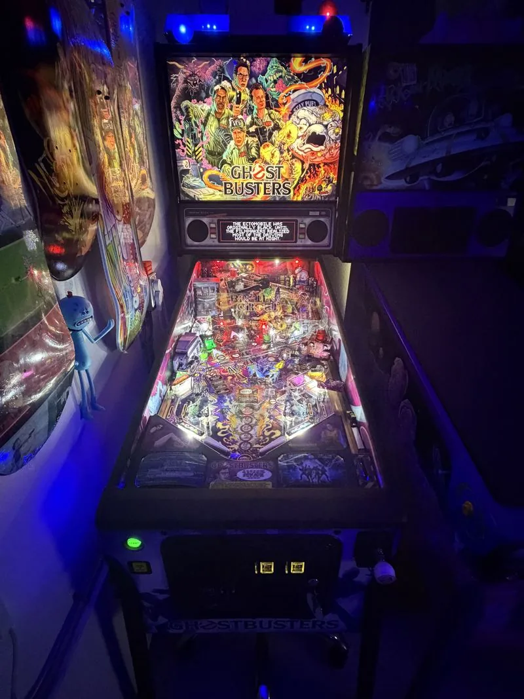
Ghostbusters Premium
Who you gonna call when the magna-slings throw the ball somewhere unfair? Nobody. That's the game.

Total Nuclear Annihilation
Scott Danesi's synthwave fever dream. Fast, brutal, single-level, perfect.

Rick and Morty — Blood Sucker Edition
The limited Blood Sucker Edition — bought new in box, home use only, running in its original butter cabinet.
VS. DualSystem — Red Tent Cocktail
The rarer sit-down side of the VS. family — the distinctive red-canopy cocktail DualSystem.

Mini Cute — Pink
The only candy-style cabinet in the collection, and it's the one that matters: Capcom's compact Mini Cute in the pink variant.
The game room also hosts the big PVMs — the 29-inch PVM-2950Q and the PVM-20L5. Meet the fleet →
In memoriam machines that passed through on their way to someone else's story

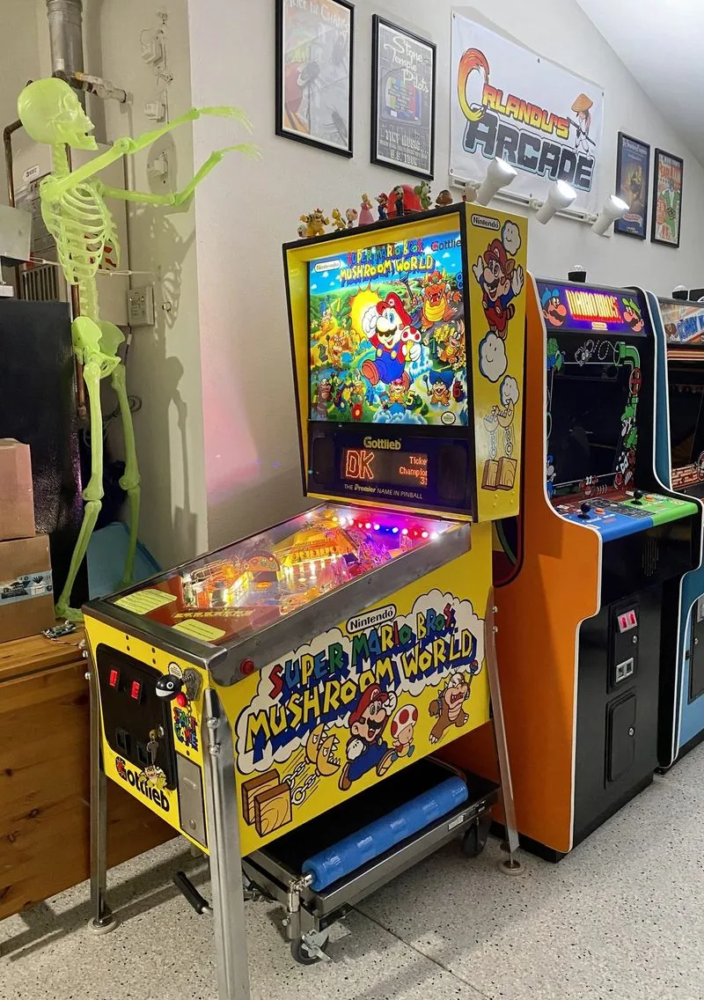

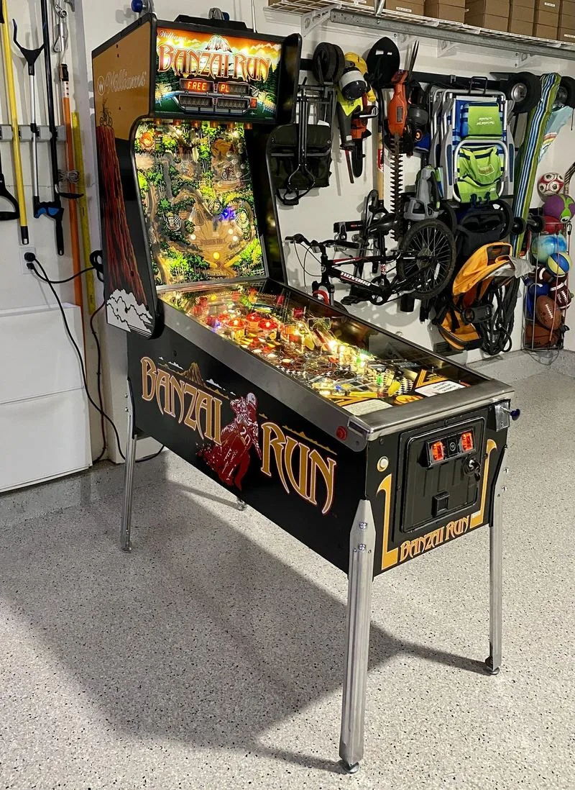

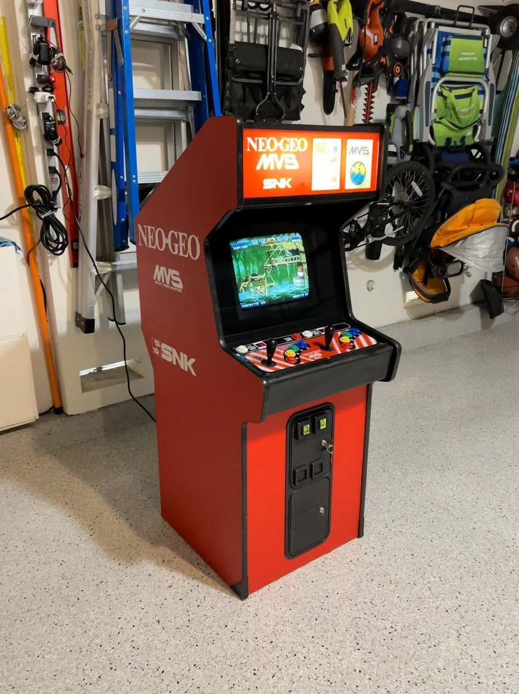
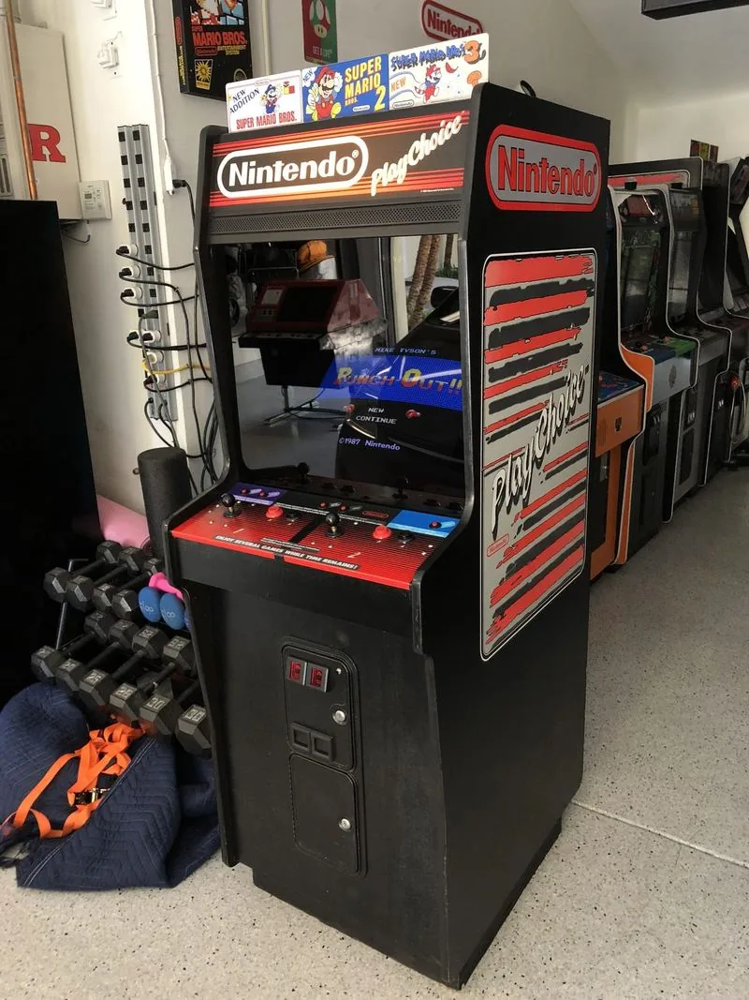
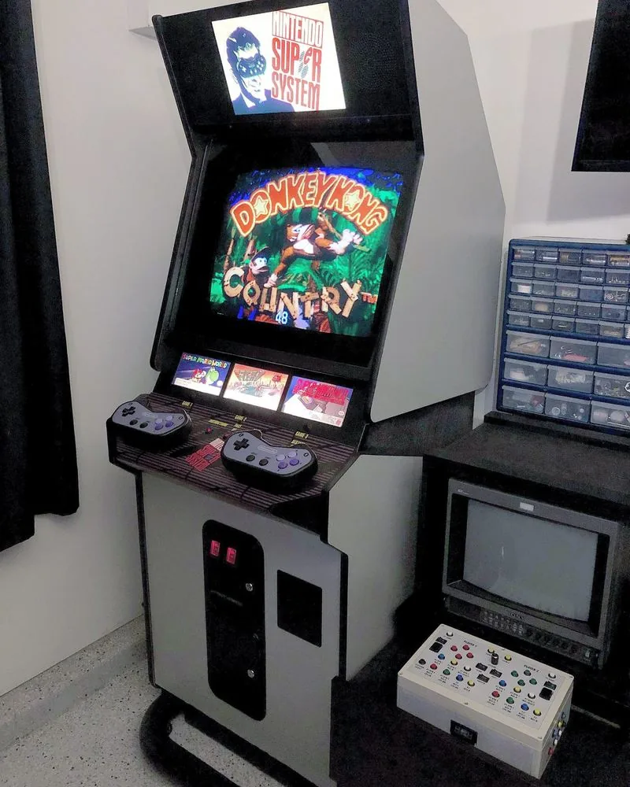
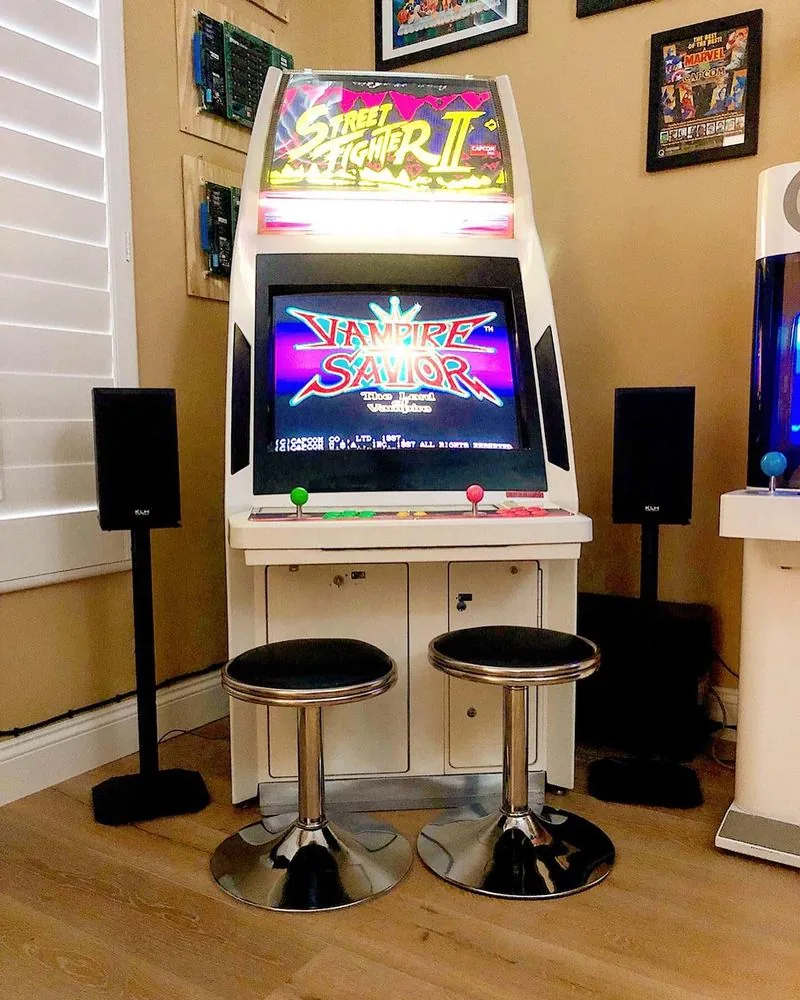
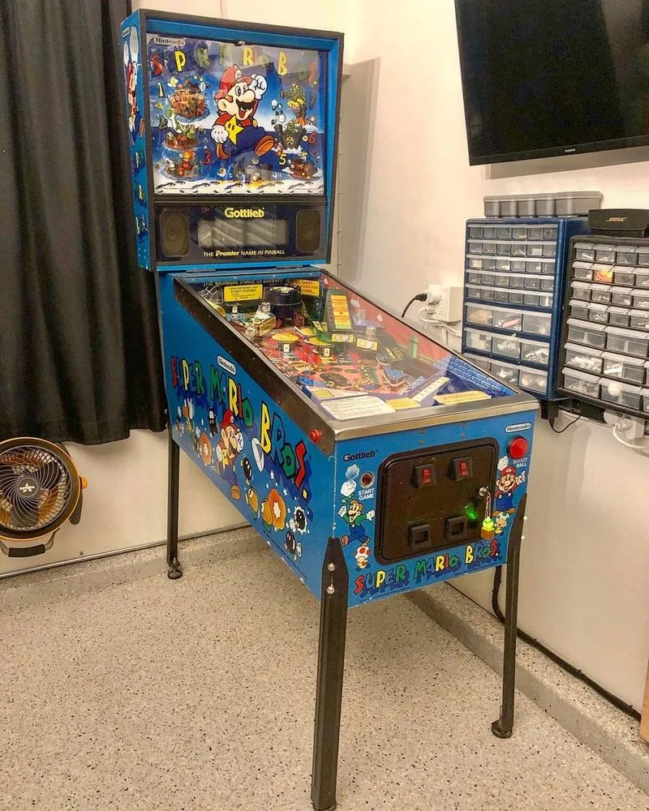
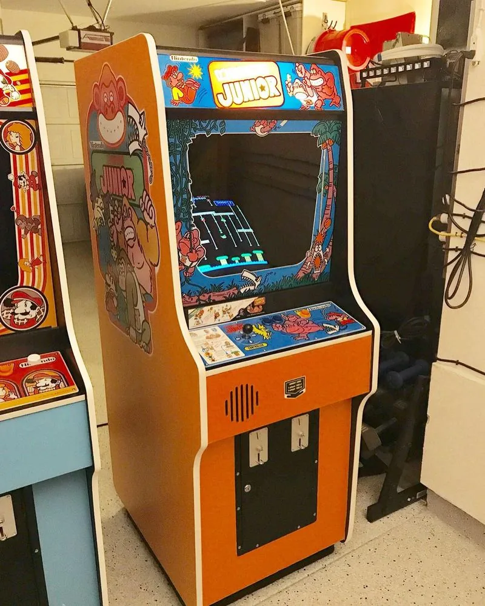
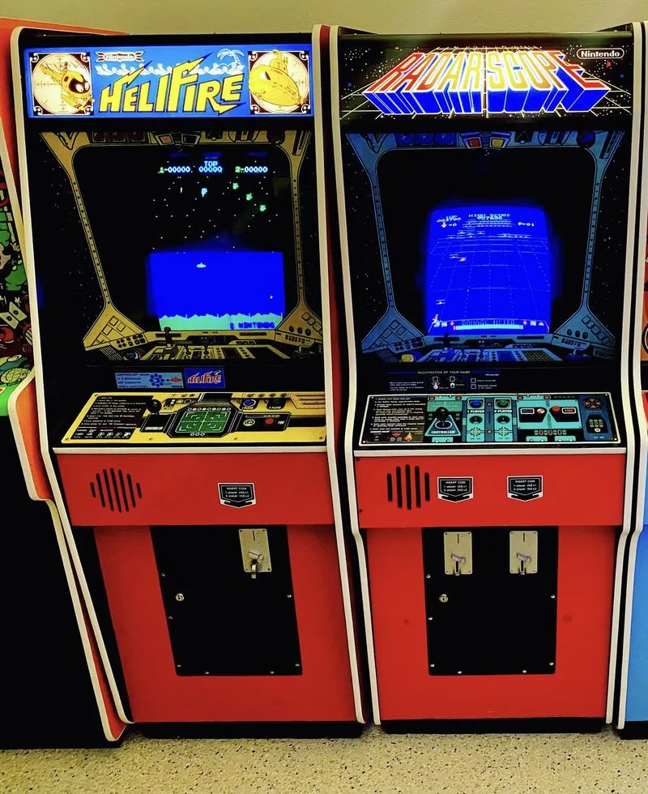
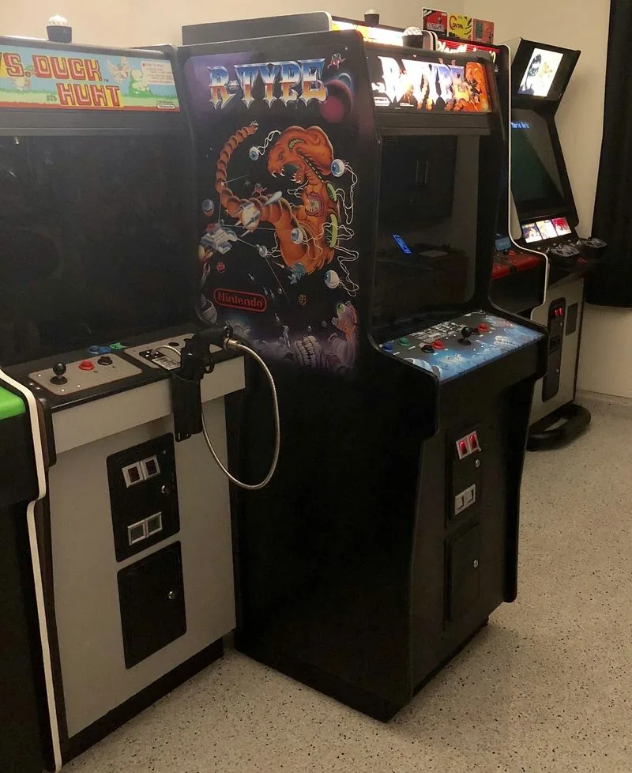
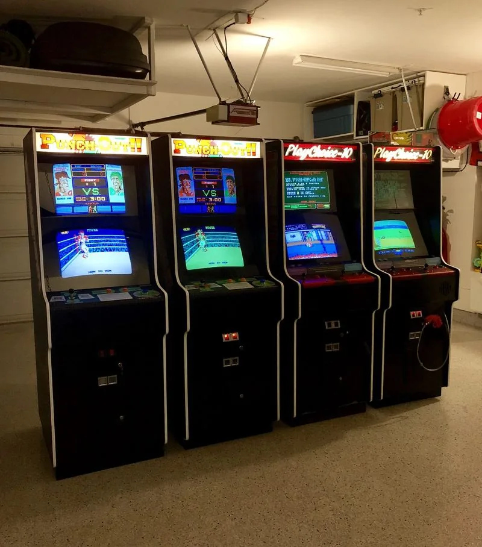
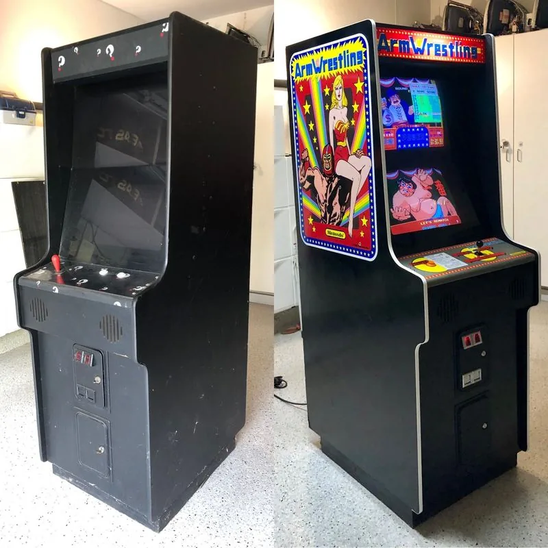
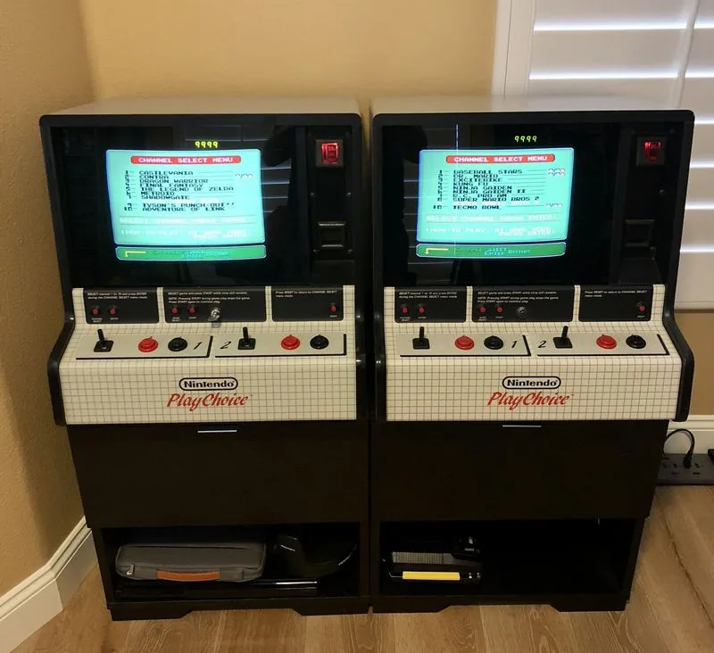
Console library
Beyond the cabinets there's a cataloged collection of consoles and games — nearly 900 titles logged, from the NES shelf to the TurboGrafx HuCards. The hardware has its own page, and the PlayChoice-10 game boards that ran in cabinets like the one in the memoriam above have a wall of their own — all fifty-two Nintendo released. And if a word on these pages — JAMMA, CPO, shop-out, candy cab — went by without an explanation, the glossary has it. Every machine here, and every console and monitor, is also on one timeline, in the order each was released.